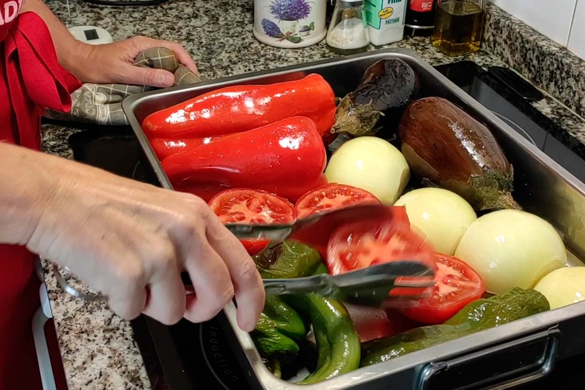
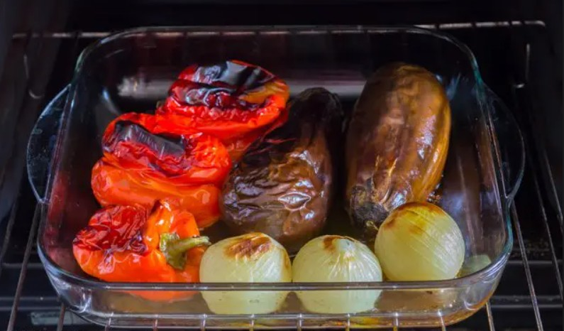
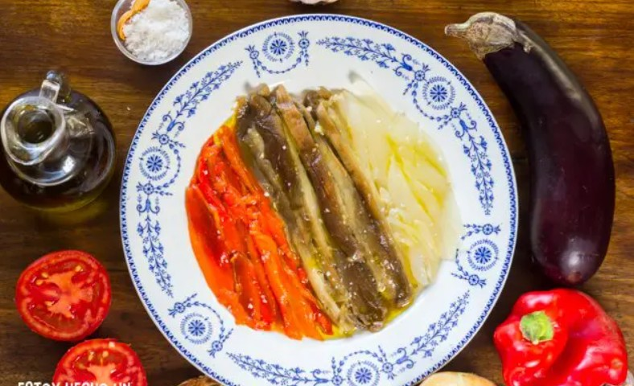

Volver a la página principal
Escalivada
Índice
Ingredientes
- 2 pimientos rojos
- 2 berenjenas
- 1 cebolla grande
- Un chorrito de aceite de oliva
- Sal al gusto
Paso a paso
- Precalienta el horno a 200°C.

- Coloca los pimientos, berenjenas y cebolla en una bandeja.

- Hornea durante 40 minutos, dándoles la vuelta a mitad del tiempo.

- Pela y corta las verduras en tiras. Añade aceite y sal.
Volver al principio
Resultado final
